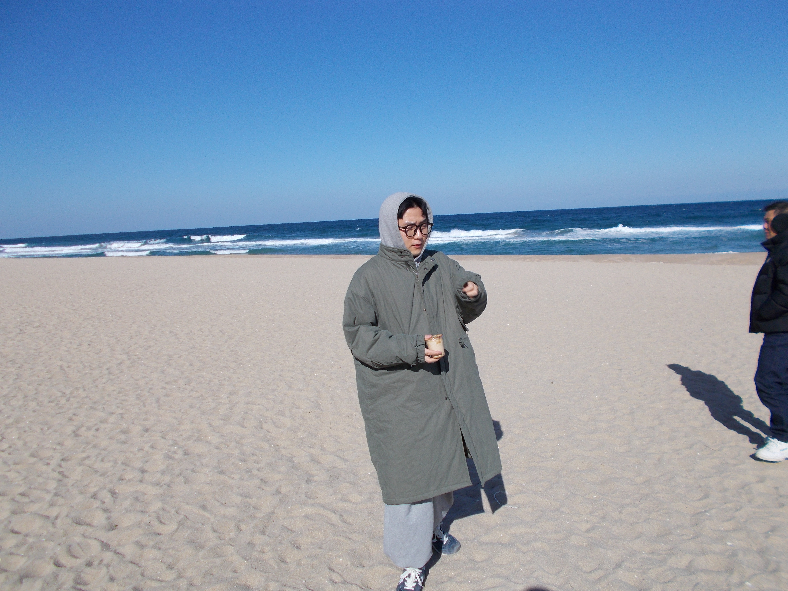

Server Administrator & DBA 지망생
안녕하세요! 정보통신공학과 백엔드 및 인프라 공부를 하고 있는 22학번 이준민 입니다.
ISFP
침대에 누워있는 것을 좋아하고 맛있는 음식 먹는 것을 좋아합니다.
Security / Fullstack

Fullstack2 팀
안녕하세요! Fullstack2 팀에서 개발 공부하고 있는 장건웅입니다. 백엔드 공부하고 있고, 클라우드 분야에 관심이 있습니다.
학교 수업을 통해 C++, Java, Python 등을 접해보았고, 최근 프로젝트에서는 Kotlin을 활용해보았습니다. 현재는 Spring Boot를 공부하고 있는 중입니다.
취미는 헬스 즐겨 하고 있습니다. 운동하는 중에는 힘들지만 잡생각도 사라지고, 끝나면 기분도 좋아집니다. 그리고 영화보는 것도 좋아합니다.
개인적인 장기로는 사과게임 초절정고수입니다. 도전은 언제나 환영입니다.